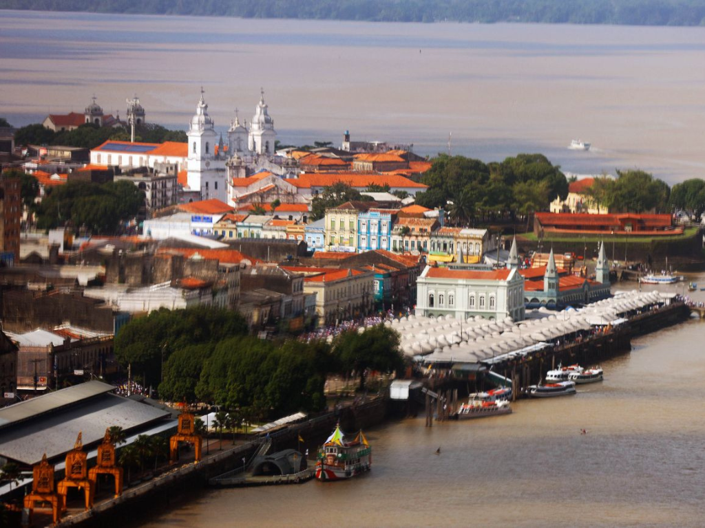

O Pará é um dos estados mais importantes da região Norte do Brasil, destacando-se pela grande riqueza natural, cultural e econômica. Cortado por extensos rios e coberto por áreas da Floresta Amazônica, o estado possui enorme biodiversidade e forte importância ambiental para o país e para o mundo. Sua capital, Belém, é conhecida pela arquitetura histórica, pela culinária típica amazônica e por eventos tradicionais, como o Círio de Nazaré, uma das maiores manifestações religiosas do Brasil. A economia paraense é impulsionada pela mineração, agropecuária, extrativismo e comércio, tornando o Pará um estado de grande relevância econômica e cultural na Amazônia brasileira.

Voltar